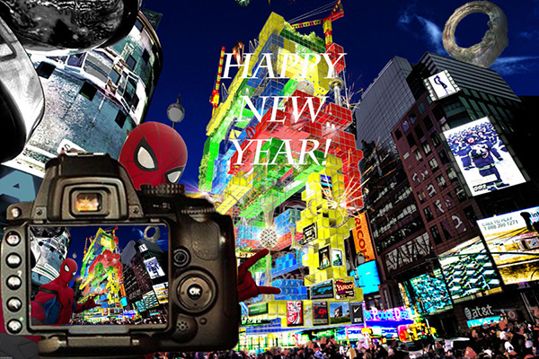
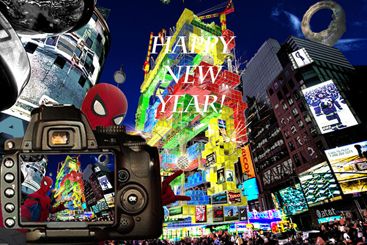

This is my Raster Project. It is about my favorite character Spider-Man. This image is about Spider-Man taking a selfit in New York. My idea came from a game called Marvel Spider-Man, it has a scence when Spider-Man is corssing the center of the city. So I made this image to recreate that scence.
Home| Raster| Vector| Print Layout| Time Base Media| Contact Me